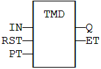
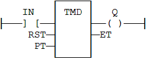

Function Block
Down-counting stop timer.
|
Name |
Type |
Description |
|
IN |
BOOL |
The time counts when this input is TRUE. |
|
RST |
BOOL |
Timer is reset to PT when this input is TRUE. |
|
PT |
TIME |
Programmed time. |
|
Name |
Type |
Description |
|
Q |
BOOL |
Timer elapsed output signal. |
|
ET |
TIME |
Elapsed time. |
The timer counts up when the IN input is TRUE. It stops when the programmed time is elapsed. The timer is reset when the RST input is TRUE. It is not reset when IN is false.
PT can be entered as a TIME literal. e.g. T#100ms, T#3s250ms, T#3h5m, T#16d8h56s.
MyTimer is a declared instance of TMD function block.
MyTimer (IN, RST, PT);
Q := MyTimer.Q;
ET := MyTimer.ET;

